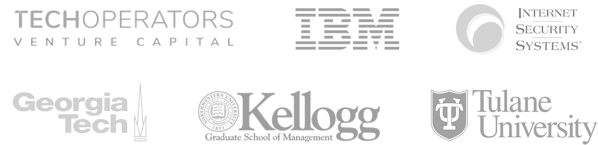

Kevin Skapinetz
Cybersecurity · Venture Capital · M&A · Strategic Advisor
I work with CEOs, leadership teams, and founders at the intersection of security, business, M&A, and enterprise software — helping them turn complex problems into clear product and go-to-market decisions.
Today I invest as a general partner in early-stage cybersecurity companies and selectively advise teams on security strategy, acquisitions, positioning, and market intelligence. Previously, I spent years building and leading a global security portfolio of $1.5B+.
For occasional advisory and board work, I focus on cybersecurity
companies where I can be directly helpful to leadership.
This site reflects independent work and advisory interests and does
not represent the views of any current or prior employer.
